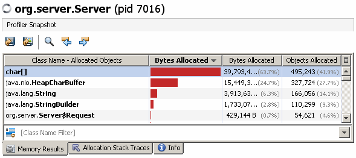
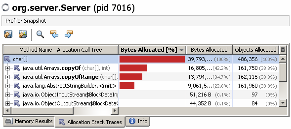

In its simplest mode, InMemProfiler tracks memory allocations and attributes these to the name of the class being allocated. This is nothing new – the same information can be derived by using a tool such as Netbeans Profiler on a live process or Eclipse Memory Analysis Tool to examine a heap dump.
However, it is often the case that the dominant class which is being allocated is the char[] or byte[] class. This raises the much more interesting question of where the memory is being allocated from. To answer this question you can’t use the Eclipse Memory Analysis Tool as the heapdump does not store information about where an object was allocated. You have to use a profiling tool such as the Netbeans Profiler.
Consider the following dummy webapp:
package com.yourorg.app;
import org.logging.Logger;
import org.server.Server.Request;
public class App
{
public static void handleRequest(Request req) {
Logger.log("Time: " + System.currentTimeMillis() + ", got request!");
// App logic here
Storage.store(System.currentTimeMillis());
}
private static class Storage
{
public static void store(long currentTimeMillis) {
Logger.log("Time: " + currentTimeMillis + ", store request!");
// Storage logic here
}
}
}
This code is invoked by a webapp container (e.g. Tomcat) and writes a log every time it handles a request and every time it stores something.
Lets start by using Netbeans Profiler to take a look at what memory is being allocated.
The main tab of output is the per class summaries. This shows that char[] arrays are by far the most common allocation.

We can drill into this further by asking Netbeans Profiler to show the Allocation Stack Traces for char[].

The stack traces are shown in a common tree with the % column showing how important each stack trace element is as a fraction of the total number of bytes allocated for instances of this class.
The problem with this view is that you probably don’t care about the fact that java.utils.Arrays allocates char[] instances. You are much more likely to care about entries further up in the stack indicating which classes within the com.yourorg package are doing this allocation. Furthermore, the Netbeans Profiler shows the stack traces in a tree so by the time you find stack frames with classes in your package you can’t see a single figure for the amount of memory that your com.yourorg classes are allocating.
InMemProfiler in #trace mode can handle this case much better.
The first time we run with InMemProfiler we can try these options:
#trace#include-[C#outputlimit-5
This traces all char[] allocations and will output the top 5 traces and the top 5 allocating classes:
Allocated objects:
93448:1107 - [C
Allocation Sites:
10400:100
java.util.Arrays.copyOf(Arrays.java)
java.lang.AbstractStringBuilder.expandCapacity(AbstractStringBuilder.java)
java.lang.AbstractStringBuilder.append(AbstractStringBuilder.java)
java.lang.StringBuilder.append(StringBuilder.java)
com.yourorg.app.App$Storage.store(App.java)
com.yourorg.app.App.handleRequest(App.java)
org.server.Server$ServerThread.run(Server.java)
java.lang.Thread.run(Thread.java)
10400:100
java.util.Arrays.copyOf(Arrays.java)
java.lang.AbstractStringBuilder.expandCapacity(AbstractStringBuilder.java)
java.lang.AbstractStringBuilder.append(AbstractStringBuilder.java)
java.lang.StringBuilder.append(StringBuilder.java)
org.server.Server$ServerThread.run(Server.java)
java.lang.Thread.run(Thread.java)
10400:100
java.util.Arrays.copyOf(Arrays.java)
java.lang.AbstractStringBuilder.expandCapacity(AbstractStringBuilder.java)
java.lang.AbstractStringBuilder.append(AbstractStringBuilder.java)
java.lang.StringBuilder.append(StringBuilder.java)
com.yourorg.app.App.handleRequest(App.java)
org.server.Server$ServerThread.run(Server.java)
java.lang.Thread.run(Thread.java)
8800:100
java.util.Arrays.copyOfRange(Arrays.java)
java.lang.String.(String.java)
java.lang.StringBuilder.toString(StringBuilder.java)
com.yourorg.app.App$Storage.store(App.java)
com.yourorg.app.App.handleRequest(App.java)
org.server.Server$ServerThread.run(Server.java)
java.lang.Thread.run(Thread.java)
8800:100
java.util.Arrays.copyOfRange(Arrays.java)
java.lang.String.(String.java)
java.lang.StringBuilder.toString(StringBuilder.java)
org.server.Server$ServerThread.run(Server.java)
java.lang.Thread.run(Thread.java)
Allocation Classes:
java.lang.StringBuilder
83608:1001 - All methods
36824:343 - append
28368:329 - toString
18416:329 -
java.lang.Thread
82808:994 - All methods
82552:988 - run
256:6 -
176:4 - init
org.server.Server$ServerThread
82552:988 - All methods
82552:988 - run
java.util.Arrays
67688:694 - All methods
37792:349 - copyOf
29896:345 - copyOfRange
java.lang.AbstractStringBuilder
56328:682 - All methods
36824:343 - expandCapacity
36824:343 - append
19504:339 -
This output isn’t great – note that java.lang.StringBuilder is the top class as it is common to all of the string construction traces. This isn’t a very interesting finding as StringBuilder is used to construct Strings throughout Java code.
This time we use the following options
#trace#include-[C#outputlimit-5#traceignore-java
This only affects the "Allocation Classes" part of the output and will ignore all "Allocation Classes" which begin with the string "java".
Allocation Classes:
org.server.Server$ServerThread
82552:988 - All methods
82552:988 - run
com.yourorg.app.App
51056:620 - All methods
51056:620 - handleRequest
com.yourorg.app.App$Storage
24800:300 - All methods
24800:300 - store
sun.misc.Launcher$AppClassLoader
19016:199 - All methods
19016:199 - loadClass
4456:58 - getPermissions
sun.misc.URLClassPath
11120:93 - All methods
11120:93 - getResource
1088:9 - getLoader
This is better but now the ServerThread is being blamed for all of the allocations so we can refine the #traceignore settings further:
#trace#include-[C#outputlimit-5#traceignore-java,sun,org.server,org.logging
This gives the following output:
Allocation Classes:
com.yourorg.app.App
51056:620 - All methods
51056:620 - handleRequest
com.yourorg.app.App$Storage
24800:300 - All methods
24800:300 - store
This is much better! InMemProfiler can now identify exactly two classes and show the memory allocation.
However, looking at the code it is a little surprising that App is being blamed for almost twice as much allocation as App$Storage. This is actually a red herring and show up because InMemProfiler attributes each memory allocation to every non ignored class in the stack trace that allocated it. This means that all the allocations within App$Storage are also attributed to App.
The output can be improved a little further by using #tracetarget to let InMemProfiler know where in the stack to stop attributing memory allocations to classes.
#trace#include-[C#outputlimit-5#traceignore-java,sun,org.server,org.logging#tracetarget-com.yourorg
Once again, this only affects the "Allocation Classes" part of the output. InMemProfiler will ignore all "Allocation Classes" further up in a stack once it finds a single frame beginning with "com.yourorg".
Allocation Classes:
com.yourorg.app.App
26256:320 - All methods
26256:320 - handleRequest
com.yourorg.app.App$Storage
24800:300 - All methods
24800:300 - store
This final output is now accurate and as useful as we can make it. This clearly shows how many bytes are allocated for char[] by each of these two classes. It should be noted that the higher char[] allocation count for the App class is due to char[]s allocated during classloading of the classes which App depends on.